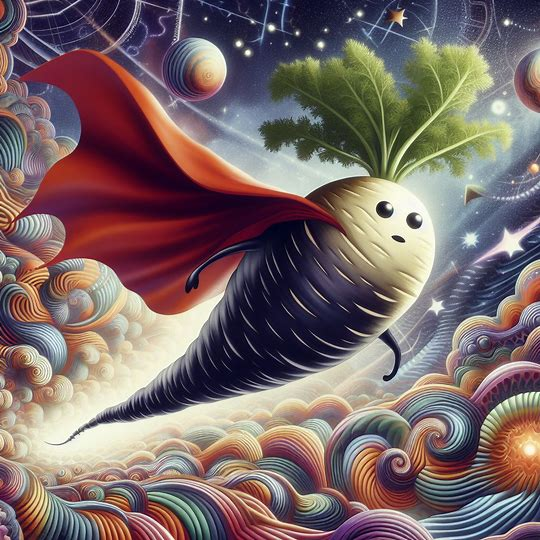
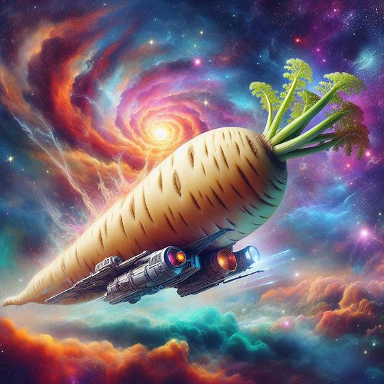
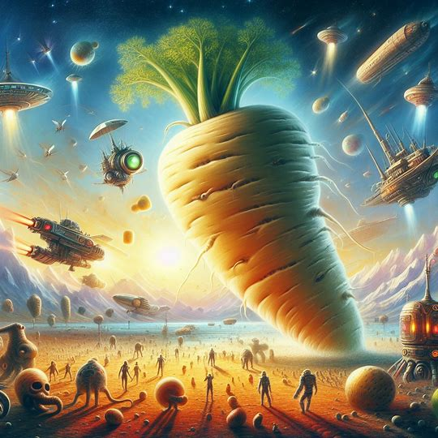

Embark on a Journey of Discovery
Welcome to the Metamorphosis Parsnip Universe, where mysteries abound and transformations take center stage. Embark on an extraordinary journey through the vast expanse of this universe, where every corner is filled with wonder and fascination.
Unlock the Secrets of Metamorphosis
Metamorphosis is a fundamental aspect of life in the Metamorphosis Parsnip Universe. Delve deep into the mysteries of transformation as you witness creatures undergo remarkable changes right before your eyes. From caterpillars to butterflies, and tadpoles to frogs, experience the awe-inspiring process of metamorphosis like never before.
Discover the Enchantment of Parsnips
Parsnips, the unsung heroes of the vegetable kingdom, hold a special place in the heart of the Metamorphosis Parsnip Universe. Explore the magical properties of these root vegetables as you learn about their rich history, nutritional benefits, and culinary delights. From savory soups to roasted delights, let the enchantment of parsnips captivate your senses.
